Share the essentials of your trip
Users provide dates, budget, mood, and companions in one simple first step. The onboarding stays light so they can begin quickly without friction.

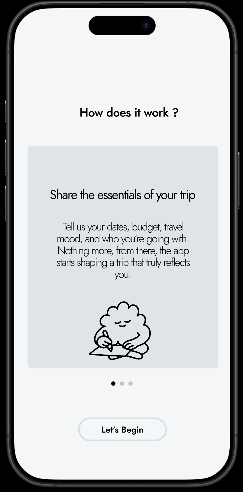
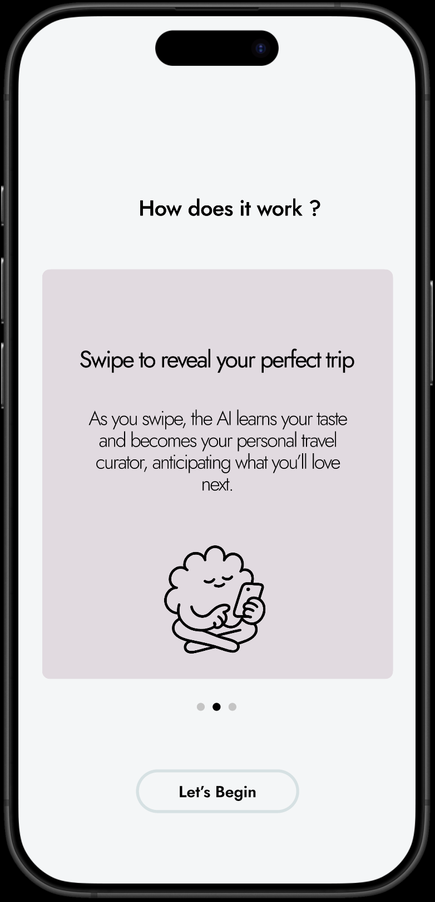
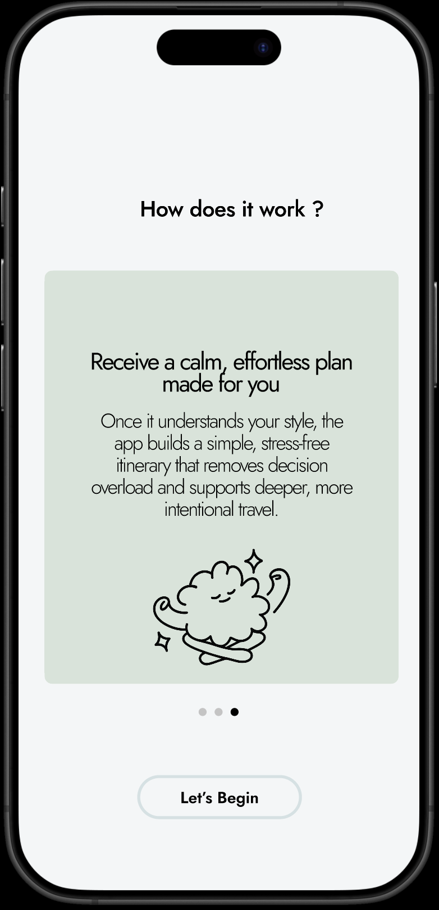
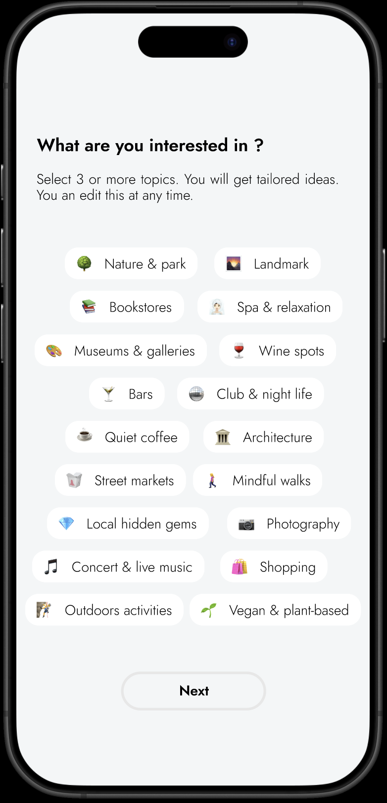
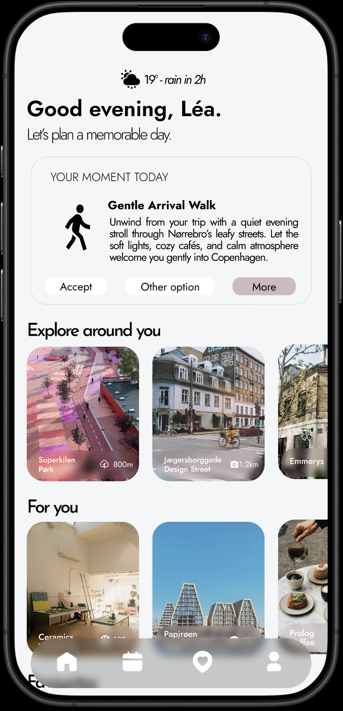
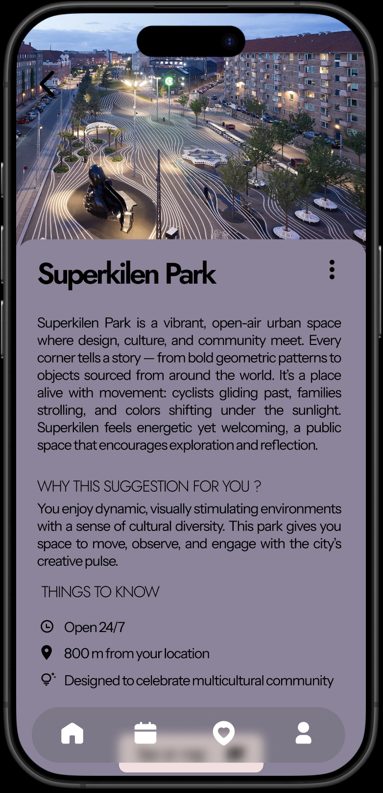
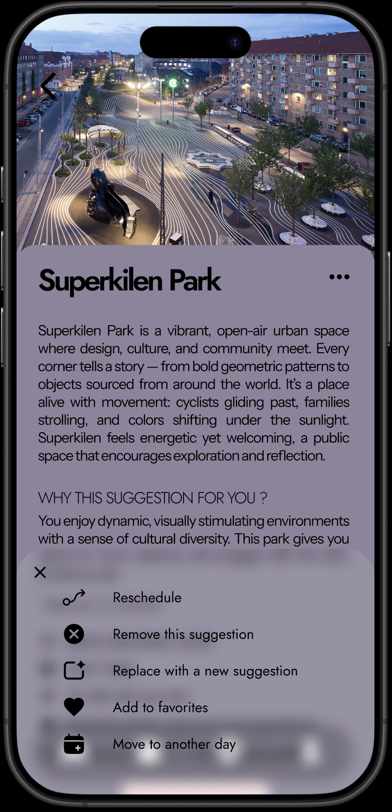
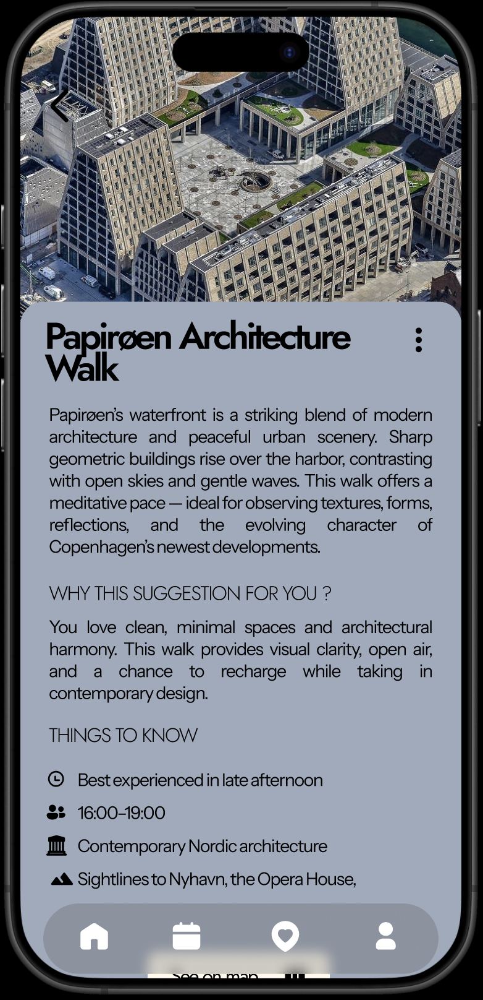
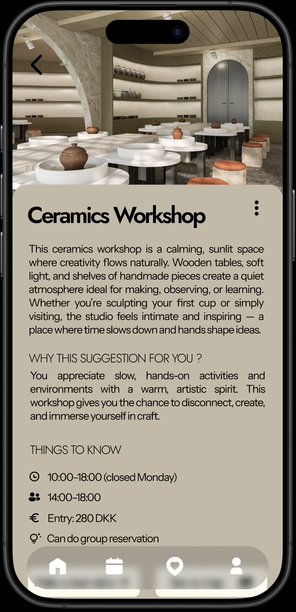
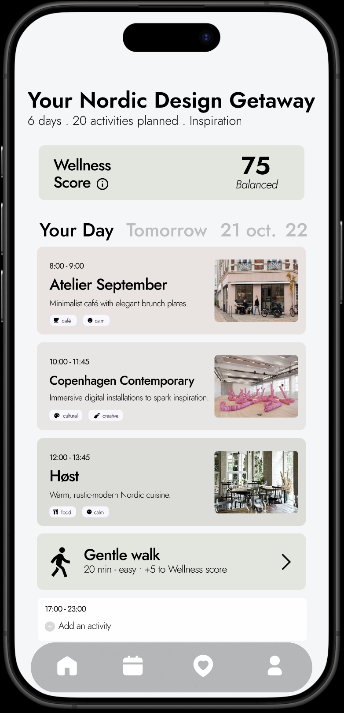
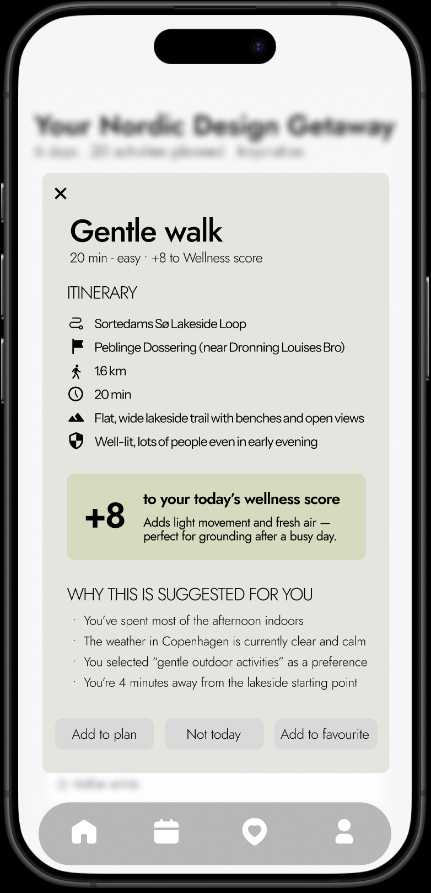
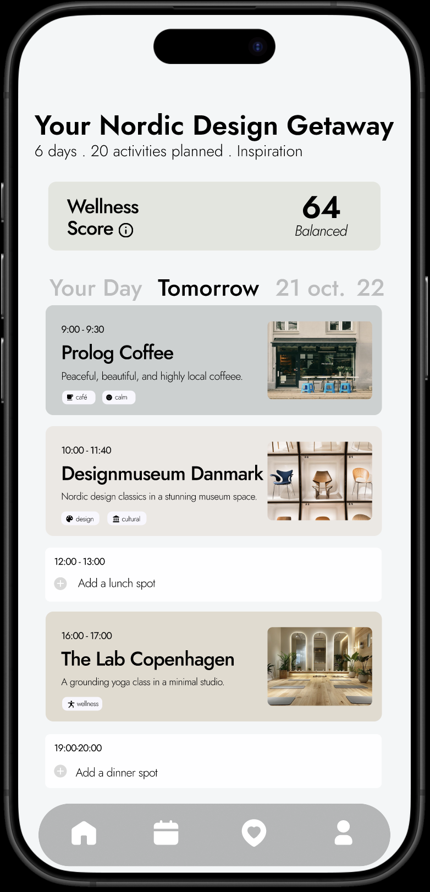
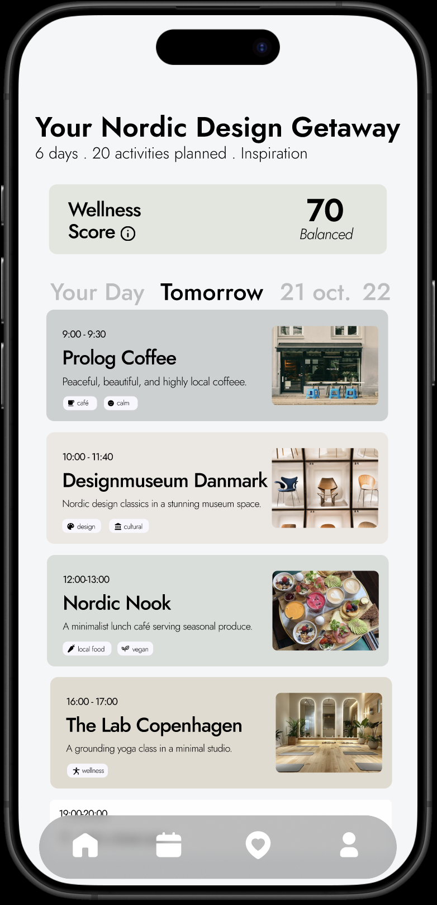
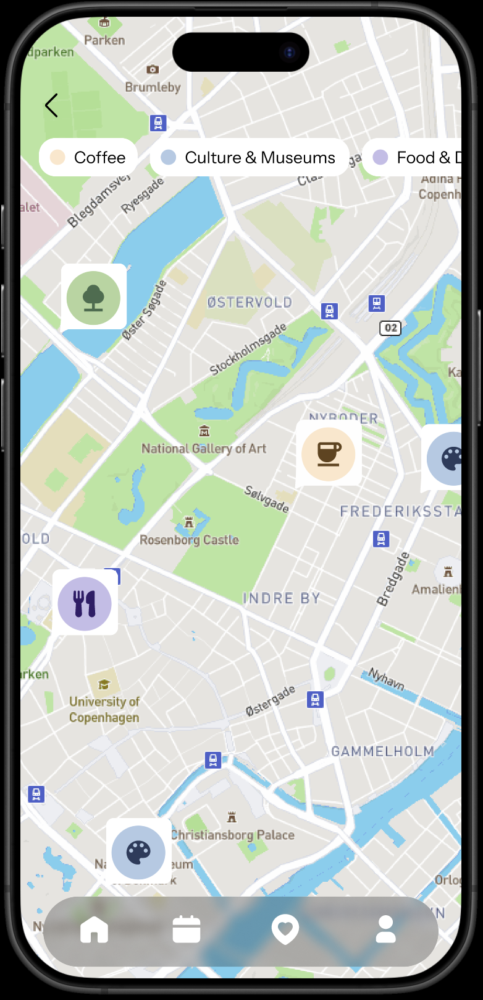
Users provide dates, budget, mood, and companions in one simple first step. The onboarding stays light so they can begin quickly without friction.
As users swipe, the assistant learns taste and continuously adapts recommendations. Each gesture makes the next options more personal.
Once preferences are clear, the app proposes a coherent itinerary. The result reduces decision fatigue and supports intentional travel.
Users start by choosing topics they care about, from nature and architecture to quiet cafes. This simple setup gives the assistant the right context for highly relevant suggestions.
The home view combines moment-based ideas, nearby places, and curated picks in one flow. It quickly orients the user with suggestions that match mood, timing, and location.
Each card expands into a rich detail page with context, reasons for selection, and practical info. This helps users understand why a place fits them before they commit.
If a suggestion does not fit, users can reschedule, replace, remove, or favorite it instantly. The plan stays flexible while preserving personalized quality.
The assistant adapts to preference signals and proposes routes that match design-oriented interests. Suggestions include timing and visual landmarks to support calm exploration.
Beyond major spots, Travelise surfaces slower experiences like workshops to keep the day balanced. The final journey feels personal, varied, and easy to follow.
Swiping activities helps users focus on what they actually want to do, instead of spending time on organization details. The AI agent then builds a plan from those preferences and adds similar recommendations automatically.
The schedule view groups activities by time and keeps the day readable at a glance. It shows a wellness score based on movement, mindfulness, and the type of activities, then proposes additions to improve that score and get the best out of the day.
The app proposes a short wellness activity when it detects a good time window. Suggestions include impact on the score and a clear reason tied to the user context.
Users keep free time with no fixed schedule for strolling and personal discovery in the city. If needed, they can quickly add a suitable activity with one click.
When users add an activity, it is automatically inserted into the timeline at the best fitting time slot. There is no need for manual rescheduling, which reduces organizational fatigue.
The map view lets users explore recommendations by area and theme. It supports quick location-based decisions when moving through the city.